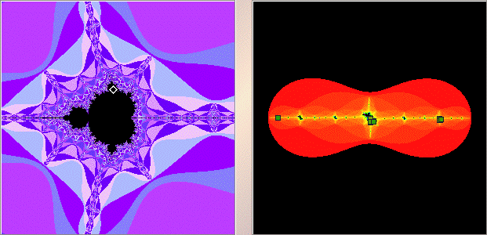

|  |
| On the left the white diamond shows we have selected a point in the largest disc atop the cardioid. |
| (Note if this midget Mandelbrot set were the whole Mandelbrot set, the disc we have
selected would be the |
| Shift-clicking or right clicking near |
| Click on each clump to magnify. |
Return to Samples.